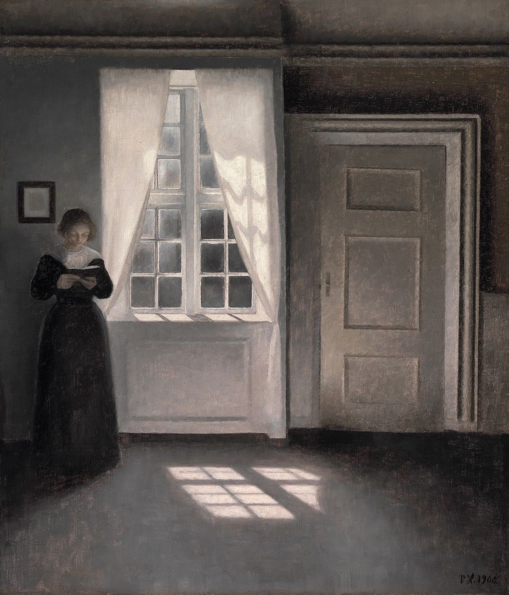
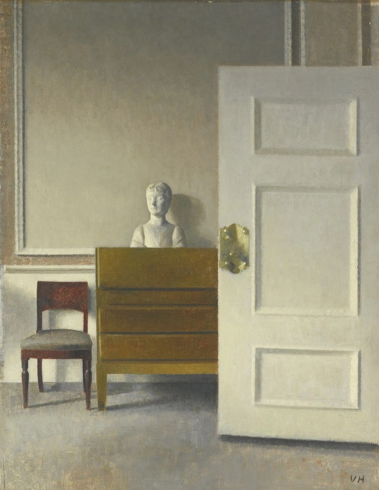
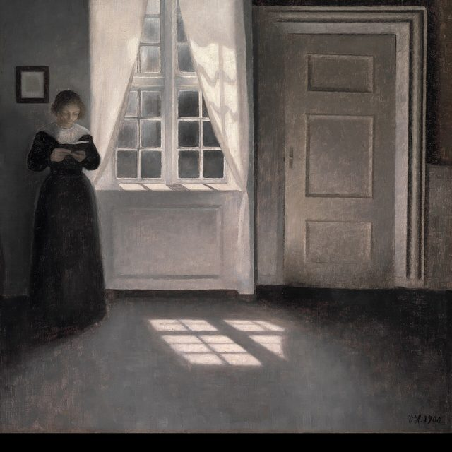

Я работаю психологом девять лет. К нам приходят, когда внутри уже слишком шумно: тревога не отпускает, силы кончились, нужно решить что-то важное и не получается.
Я не даю быстрых советов и не обещаю, что всё станет легко. На встрече мы спокойно разберёмся, что с вами происходит, и вы сами увидите, какие шаги вам по силам.
Всё, что вы расскажете, остаётся между нами. Я не ставлю диагнозов и не назначаю лекарства: это работа врача. Если понадобится, подскажу, к кому обратиться.
Анна Ветрова
Психолог-консультант (имя и образование вымышлены для демо)
Как проходит работа
Первая встреча нужна, чтобы познакомиться и понять, подхожу ли я вам. Дальше встречаемся раз в неделю, пока есть смысл.
Первая встреча
- Знакомство и ваш запрос20 мин
- Разбор ситуации25 мин
- План: сколько встреч нужно5 мин
Дальше
- Одна встреча50 мин
- Частотараз в неделю
Цены
Встречи
- Первая встреча, очно или онлайн2 000 ₽
- Консультация в кабинете, 50 минут3 000 ₽
- Консультация онлайн по видео, 50 минут2 800 ₽
Для пар и семей
- Встреча вдвоём, 80 минут4 500 ₽
Условия
- Отмена за сутки без оплатыбесплатно
- Перенос встречиодин раз бесплатно
Цены в демо условные.

Вопросы
Нужно ли идти, если «ничего страшного»? Можно прийти просто поговорить. Не нужно ждать, пока станет совсем плохо.
Вы ставите диагнозы? Нет, диагнозы ставит врач. Я помогаю разобраться в ситуации и в чувствах, а если нужна помощь врача, скажу об этом прямо.
Кто узнает, что я у вас был? Никто. Я не передаю никому сведений о наших встречах.
Сколько встреч понадобится? Бывает хватает нескольких, бывает нужно больше. После первой встречи я скажу, как вижу, и вы решите сами.
Принимаете ли подростков? С 14 лет, с согласия родителей. Первую встречу можно провести вместе с родителем.
Можно ли онлайн? Да, по видеосвязи. Нужна тихая комната и 50 минут времени.
Что с оплатой? Переводом после встречи или заранее, как вам удобнее.
Если мне совсем плохо прямо сейчас? Позвоните по номеру 112. Это не замена консультации, но помощь придёт сразу.
Пишите, если хотите записаться или просто узнать, подойду ли я вам.

Как с вами связаться?
Уфа, очно и онлайн. Отвечаю в течение дня. Адрес и контакты условные (демо).